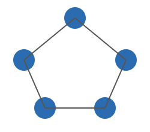

Post 2 — Representación de Grafos
Para poder usar un grafo en un programa debemos guardarlo en memoria. Las dos representaciones clásicas son:
- Lista de Adyacencia
- Matriz de Adyacencia
1) Lista de Adyacencia
En una lista de adyacencia cada nodo tiene asociada una lista (o vector) con sus vecinos. Es muy eficiente en memoria para grafos dispersos (pocas aristas).
Ejemplo (mismo grafo del Post 1)
A → B, D
B → A, C
C → B, E
D → A
E → C
Ventajas: ocupa O(V + E) memoria, fácil de iterar vecinos.
Desventajas: comprobar si existe una arista entre dos nodos puede costar O(deg(v)).
2) Matriz de Adyacencia
La matriz de adyacencia es una tabla N×N (N = número de nodos). Cada celda (i, j) indica si existe arista entre i y j (1) o no (0). Para grafos ponderados se guarda el peso en la celda.
Ejemplo (orden de nodos: A B C D E)
| A | B | C | D | E | |
|---|---|---|---|---|---|
| A | 0 | 1 | 0 | 1 | 0 |
| B | 1 | 0 | 1 | 0 | 0 |
| C | 0 | 1 | 0 | 0 | 1 |
| D | 1 | 0 | 0 | 0 | 0 |
| E | 0 | 0 | 1 | 0 | 0 |
Ventajas: comprobar existencia de arista O(1). Desventajas: memoria O(N²), ineficiente si el grafo es grande y disperso.
Comparación rápida
- Lista de adyacencia: buena para grafos dispersos, consume menos memoria, recorrido de vecinos rápido.
- Matriz de adyacencia: buena para grafos densos o cuando necesitemos consultas rápidas "¿hay arista entre u y v?"
Ejemplo visual
Usamos el mismo diagrama que en Post 1 para relacionar lo visual con ambas representaciones:
En la lista de adyacencia verás las conexiones por nodo; en la matriz ves la conectividad entre pares.
Implementación básica (ejemplo en pseudocódigo)
Lista de adyacencia (pseudocódigo):
# crear listas vacías para cada vértice
adj = [ [] for v in 0..N-1 ]
# agregar arista no dirigida u-v
adj[u].append(v)
adj[v].append(u)
Matriz de adyacencia (pseudocódigo):
# crear matriz NxN inicializada en 0
mat = [[0 for j in 0..N-1] for i in 0..N-1]
# agregar arista no dirigida u-v
mat[u][v] = 1
mat[v][u] = 1